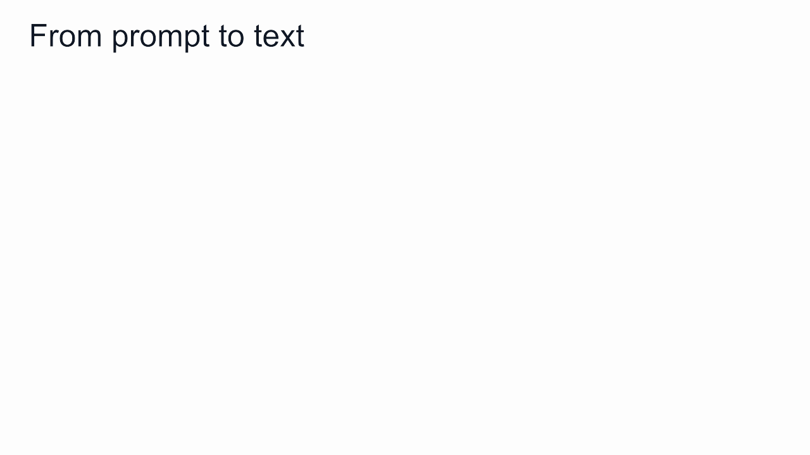
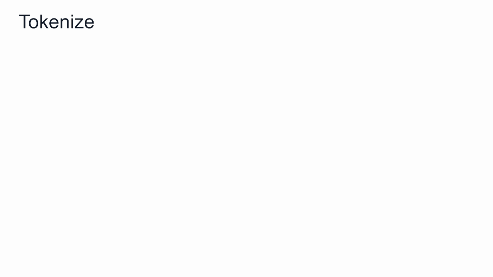
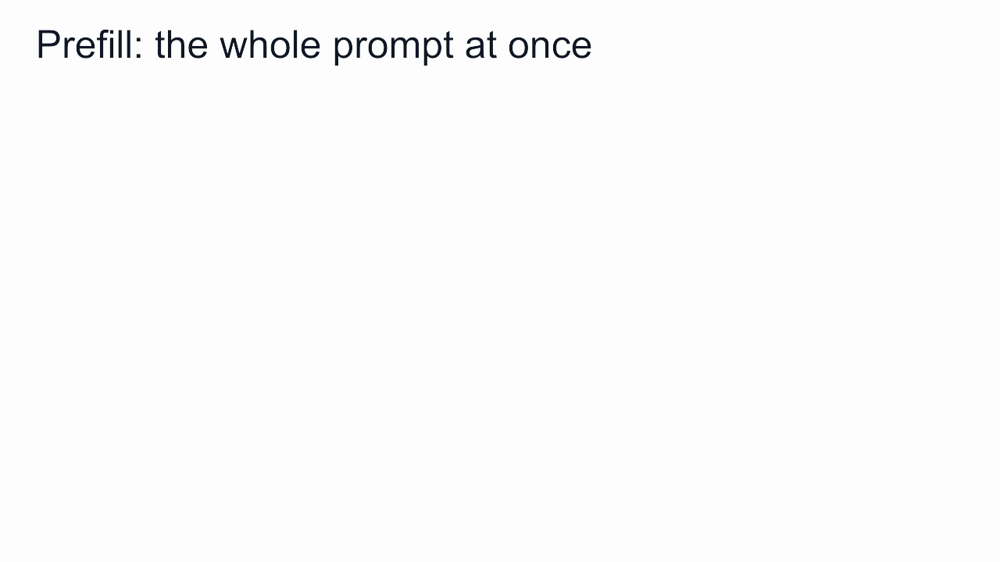
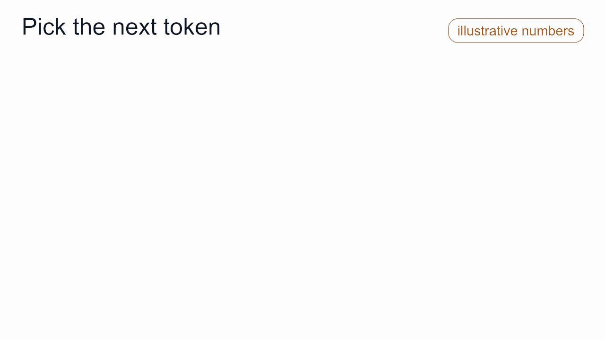
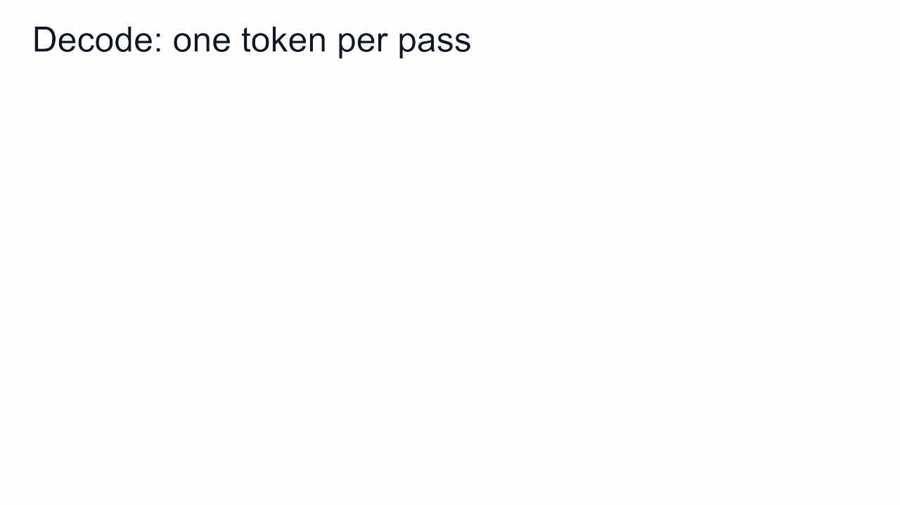

问聊天模型一句 Is OpenAI open?，回答会一段一段地出现：Partly. Some weights are open.
这句回答只有五个英文单词，模型却要为它重复运行同一套流程。以小型开源模型 Qwen3-0.6B 为例，这句回答一共 9 个片段：前 8 个是文字，最后 1 个表示回答结束。
每写一个片段，模型都要完整运行一次，经过全部 5.96 亿个 weights（权重）。每次运行，它给词表里的 151,936 个条目各打一个分，最后只留下一个。写完这句回答，一共算了 1,367,424 个分数。
这些片段叫 token。本文的标题在 Qwen3 的词表里就是 4 个 token：一颗、␣token、␣的、诞生（␣ 表示空格）。
下面跟着一次真实的请求走一遍，从你按下回车，到回答出现在屏幕上。文中的 token 和编号都取自 Qwen3 的真实词表。今天的聊天模型都用同一个循环生成文字，差别在于模型大小、词表和包裹问题的模板。

语言模型并不直接写字。它每运行一次，只给下一个 token 打一轮分；外面一个简短的循环，把这些分数变成文字。
六个步骤
- chat template： 应用把你的问题套进一个固定格式。
- tokenize： 套好格式的文字变成一串数字。
- prefill： 模型一次读完这串数字，给回答的第一个 token 打分。
- 挑选： 从分数中选出一个 token。
- decode： 选出的 token 送回模型，模型给下一个 token 打分。第 4、5 步反复进行，直到出现结束 token。
- detokenize： 数字变回文字。
第 1 到 3 步，每次请求只做一遍。第 4 到 6 步，回答里有几个 token 就做几遍。
第一步：给问题套上格式
你输入的问题，模型看不到原样。应用会先把它套进 chat template：模型在训练成助手时一直使用的固定文本格式。Qwen 的格式如下：
<|im_start|>user
Is OpenAI open?<|im_end|>
<|im_start|>assistant
<|im_start|> 和 <|im_end|> 是 special token，也就是词表里的单个条目，用来标出一轮对话的开始和结束。
最后一行开启助手的发言，然后停在这里。模型的回答从下一行开始写。关闭思考模式时，Qwen3 还会在这里插入一个空的思考块，图中略去。

模型读到的是套好格式的整段文本，你输入的问题只是其中一行。
每个模型家族都有自己的模板。用错了模板，模型看到的是训练中从未见过的格式，回答质量就会下降。自己部署的模型效果不如官方演示，这是常见原因之一。
第二步：文字变成数字
模型只能对数字做计算，所以文字要先变成数字。这一步由 tokenizer 完成。
tokenizer 依据的是 vocabulary（词表）：一张固定的文本片段清单，每个片段有一个行号，叫 token ID。Qwen3 的词表有 151,669 个条目。
tokenizer 把套好格式的问题切成词表中已有的片段，再把每个片段换成它的编号。我们的问题变成了 13 个 token：
151644 872 198 3872 5264 15469 1787 30 151645 198 151644 77091 198

从这一步开始，模型看到的只有编号，没有文字。
切分的结果有几个特点：
- 一个 token 可以是整个单词、单词的一部分、标点或特殊标记。OpenAI 是两个 token：
␣Open和AI。 - 单词前面的空格，归在这个单词的 token 里。
␣open（1787）和open是两个不同的条目。 - 常见的中文词往往是一个条目，比如 开放 是 100713 号 token。
- 换行也是 token（198），模板里用了三次。
词表在训练开始前就已确定。模型学习时它不变，回答问题时它也不变。
第三步：模型一次读完整个 prompt
权重就是模型本身：5.96 亿个在训练中确定的数字，回答问题时保持不变。13 个编号要经过三个阶段。
embedding。 每个编号从一张表里取出对应的一行。这张表有 151,936 行，每行 1,024 个数字。tokenizer 用到其中 151,669 行，其余是不用的填充行。这一张表就有 1.556 亿个权重，占整个模型的 26%。
28 层。 13 个向量接着经过 28 层。在每一层里，每个位置都会查看它前面的位置（这叫 attention），再更新自己的向量。13 个位置是一起通过的，只需要一次运行。这个阶段叫 prefill。
LM head。 只有最后一个位置的向量继续往下走。LM head 把它和词表里的每个条目比较，给每个条目一个分数，一共 151,936 个，叫 logits。在 Qwen3-0.6B 里，LM head 直接复用 embedding 表。
一路上，每一层都为每个位置存下两个向量：key 和 value，合起来叫 KV cache。后面的 token 还要用到它们。存下来以后，prompt 就不用再算第二遍。

一次运行，给词表里的每个 token 各打一个分。分数最高的只是候选，还没有被选中。
第四步：151,936 个分数变成一个 token
logits 是原始分数。从它们得到一个 token，只需要几步算术，不涉及任何权重：
- softmax：把 logits 变成概率，全部为正，加起来等于 1。
- temperature：在 softmax 之前，先把 logits 除以它。小于 1，概率更集中在最高的 token 上；大于 1，概率分布更平。
- top-p：保留概率加起来达到 p（这里是 0.9）的最小一组 token，其余丢掉。
- greedy decoding 或 sampling：前者取概率最大的 token，后者按概率随机抽一个。
在我们的示意中，top-p 之后剩下三个 token：Part 占 57%，␣Open 占 29%，No 占 14%。
greedy decoding 每次都写 Part。sampling 多数时候写 Part，有时写 ␣Open，偶尔写 No。

这些设置由应用或 API 调用决定，与模型的权重无关。
同一组权重，可以每次给出同样的回答，也可以每次给出不同的回答，区别只在最后怎么挑。
第五步：循环
选出的 token 接到序列末尾，模型再运行一次。这个阶段叫 decode。
decode 时，模型不会重读整个 prompt，只有最新的那个 token 经过 28 层。在每一层里，它读取 KV cache 中已有的 key 和 value，之前的每个位置各一组，再把自己的一组存进去。
LM head 给下一个 token 打分，选出一个，再送回模型。如此反复。
模型选出结束 token <|im_end|>，或者达到应用设定的长度上限，循环就停止。在我们的例子里，prefill 给出了 Part，接下来 8 次 decode 依次给出 ly、.、␣Some、␣weights、␣are、␣open、.，最后是 <|im_end|>。9 个 token，9 次运行。

prefill 一次处理整个 prompt；decode 每次只处理一个 token，每一次都要把模型的权重重新读一遍。
第六步：数字变回文字
输出的编号沿着同一张词表反向查回去：
- 每个编号换回它的文本片段；
- 去掉结束 token；
- 开头的空格留在各自的单词前；
- 片段拼成完整的回答。
应用在每个 token 到达时就做这一步，所以回答是一点一点出现的。
有些字符，包括许多中文字，会跨越不止一个 token。应用会先暂存不完整的字节，等这个字完整了再显示。

同一张词表用了两次：进来时把文字换成编号，出去时把编号换回文字。
这个循环能解释什么
使用聊天模型时注意到的不少现象，都能从这个循环得到解释。
回答一点一点出现。 模型每运行一次产生一个 token，应用收到一个就显示一个。
同一个问题，回答每次不同。 聊天应用通常用 sampling。调低 temperature，或者改用 greedy decoding，回答会更稳定。
等待分两种。 prompt 很长时，第一个字出来得慢，因为 prefill 要把它全部处理一遍。回答很长时，整体完成得慢，因为 decode 每个 token 都要单独运行一次。速度指标也分这两种：首个 token 的等待时间，和每秒生成的 token 数。
数字母很难。 问 How many r are in strawberry? 时，Qwen3 把 ␣strawberry 当作一个 token，编号 72600。输入里没有一个字母，模型只能凭训练中学到的、关于 72600 号 token 的拼写知识来回答。如果前面没有空格，strawberry 会被切成三个 token：str、aw、berry。
额度和价格按 token 计算。 上下文长度、API 价格和速率限制，计量单位都是 token，字数或词数只能粗略换算。一句话占多少 token，取决于语言和词表。
聊天时模型不会学习。 权重始终不变。你的对话只存在于两个地方：应用每次发送的 token 序列，以及由它算出的 KV cache。
回答里的每一个 token，都出自同一个循环：给整个词表打分，挑一个，接上，再来一遍。
小结
- 应用把问题套进 chat template，tokenizer 再用固定的词表把它变成 token ID。
- prefill 一次把整个 prompt 送进模型，填好 KV cache，并给出 logits：词表里每个条目一个分数。
- softmax、temperature、top-p，加上 greedy decoding 或 sampling，把 logits 变成一个 token。这一步不涉及权重。
- decode 把每个新 token 送回模型，每个 token 运行一次，直到出现结束 token。
- detokenize 把编号变回文字，到一个 token，显示一个。